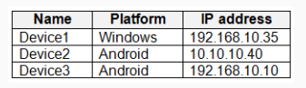
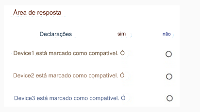

174-PONTO DE ACESSO
Você tem dispositivos sem acesso root registrados no Microsoft Intune, conforme mostrado na tabela a seguir.

Os dispositivos são membros de um grupo denominado Grupo1.
No Intune, você cria um local de conformidade do dispositivo que possui as seguintes configurações:
• Nome: Rede1
• Faixa IPv4: 192.168.0.0/16
No Intune, você cria uma política de conformidade do dispositivo para a plataforma Android. A política tem as seguintes
configurações:
• Nome: Política1
• Integridade do dispositivo: Dispositivos enraizados: Bloquear
• Locais: Local: Rede1
• Marcar o dispositivo como não compatível: imediatamente
• Atribuído: Grupo1
A política de conformidade do dispositivo Intune tem as seguintes configurações:
• Marcar dispositivos sem política de conformidade atribuída como: Compatível
• Detecção aprimorada de jailbreak: ativado
• Período de validade do status de conformidade (dias): 20
Para cada uma das afirmações a seguir, selecione Sim se a afirmação for verdadeira. Caso contrário, deixe em branco.
NOTA: Cada seleção correta vale um ponto.
